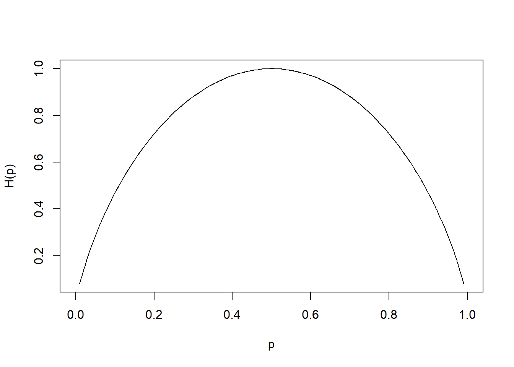

Chapter 11 Communication
11.1 Information Theory
11.1.1 Entropy
Most of the examples are taken from philentropy package in R, which can be accessed via this
link
11.1.1.1 Discrete Entropy
If \(\mathbf{p}_X = (p_{x1},p_{x2},...,p_{xn})\) is the probability distribution of the discrete random variable X with \(P(X = x) = p_{xi}\). Then, the entropy of the distribution is (Shannon 1948)
\[ H(\mathbf{p}_X) = -\sum_{x_i} p_{xi}\log_2 p_{xi} \]
where
- entropy unit is bits, and \(H(p) \in [0,1]\) and max at \(p = 0.5\)
- or the unit is nats (\(log_e\))
- or the unit is dits (\(log_{10}\))
In general, if you have different bases, you can convert between units. Given bases a and b
\[ \log_a k = \log_a b \times log_b k \]
where \(\log_a b\) is a constant.
Generalize
\[ H_b(X) = log_b a \times H_a(X) \]
Equivalently,
\[ H(X) = E(\frac{1}{\log p(x)}) \]
Entropy is the measure of how much information gained from learning the value of X (Zwillinger 1995, 262). Entropy depends on the distribution of X.
Example:
If X has 2 values, then \(\mathbf{p}= (p,1-p)\) and
\[ H(\mathbf{p}_X ) = H(p,1-p) = -p \log_2 p - (1-p) \log_2 (1-p) \]
which is known as binary entropy function
Plot of p vs. H(p) where max of \(H(\mathbf{p}_X) = \log_2 n\) when \(X \sim U\)
hb <- function(gamma) {
-gamma * log2(gamma) - (1 - gamma) * log2(1 - gamma) # output in bits
}
xs <- seq(0, 1, len = 100)
plot(xs,
hb(xs),
type = 'l',
xlab = "p",
ylab = "H(p)")
library("philentropy")
Prob <- 1:10/sum(1:10) # probabilities P(X)
H(Prob) # Shannon's Entropy## [1] 3.10364311.1.1.2 Mutual Information
If X and Y are two discrete random variables and \(\mathbf{p}_{X \times Y}\) is the their joint distribution, the mutual information (i.e., learning of a value of X gives information about the value of Y) of X and Y is
\[ I(X,Y) = I(Y,X) = H(\mathbf{p}_X)+ H(\mathbf{p}_Y)- H(\mathbf{p}_{X \times Y}) \]
where \(I(X,Y) \ge 0\) and \(I(X,Y) = 0\) iff X and Y are independent (information about X gives no information about Y).
Equivalently,
\[ MI(X,Y) = \sum_{i=1}^n \sum_{j=1}^m P(x_i, y_j) \times \log_b (\frac{P(x_i,y_j)}{P(x_i) \times P(y_j)}) \]
Properties:
- \(I(X;X) = H(X)\) known as self-information
- \(I(X;Y) \ge 0\) with equality iff \(X \perp Y\)
P_x <- 1:10/sum(1:10) # distribution P(X)
P_y <- 20:29/sum(20:29) # distribution P(Y)
P_xy <- 1:10/sum(1:10) # joint distribution P(X,Y)
MI(P_x, P_y, P_xy) # Mutual Information## [1] 3.31197311.1.1.3 Relative Entropy
The measure of the distance between distribution p and q is called relative entropy, denoted by \(D(p ||q)\)
Equivalently, it measures the inefficiency of assuming distribution q when the true distribution is p.
The relative entropy between p(x) and q(x) is
\[ D(p||q) = \sum_x p(x) \log \frac{p(x)}{q(X)} \]
where
- \(D(p||q) \ge 0\) and equality iff \(p = q\)
11.1.1.4 Joint-Entropy
\[ H(X,Y) = - \sum_{i=1}^n \sum_{j = 1}^m P(x_i, y_j) \times \log_b(P(x_i,y_j)) \]
P_xy <- 1:10/sum(1:10) # joint distribution P(X,Y)
JE(P_xy) # Joint-Entropy## [1] 3.10364311.1.1.5 Conditional Entropy
\[ H(Y|X) = - \sum_{i=1}^n \sum_{j = 1}^m P(x_i, y_j) \times \log_b(\frac{P(x_i)}{P(x_i,y_j)}) \]
P_x <- 1:10/sum(1:10) # distribution P(X)
P_y <- 1:10/sum(1:10) # distribution P(Y)
CE(P_x, P_y) # Joint-Entropy## [1] 0Relation among entropy measures
\[ H(X,Y) = H(X) + H(Y|X) = H(Y) + H(X|Y) \]
Properties:
- Chain rule: \(H(X_1, ..., X_n) = \sum_{i=1}^n H(X_i | X_{i-1},...,X_1)\)
- \(0 \le H(Y|X) \le H(Y)\) Information on X does not increase the entropy measure of Y
- If \(X \perp Y\), then \(H(Y|X) = H(Y); H(X,Y) = H(X) + H(Y)\)
- \(H(X) \le log |n_X|\) where \(n_X\) = number of elements in X
- \(H(X) = \log (n_X)\) iff \(X \sim U\)
- \(H(X_1,...,X_n) \le \sum_i^n H(X_i)\)
- \(H(X_1,...,X_n) = \sum_i^n H(X_i)\) iff \(X_i\)’s are mutually independent.
11.1.1.6 Continuous Entropy
If X is a continuous variable, its entropy is
\[ h(\mathbf{X}) = - \int_{R^d} p(\mathbf{x})\log p(\mathbf{x}) dx \]
where d is the dimension of X.
If X and Y are continuous random variables with density functions \(p(\mathbf{x})\) and \(q(\mathbf{y})\), the relative entropy is
\[ H(X,Y) = \int_{R^d} p(x) \log \frac{p(x)}{q(x)} dx \]
More advance analysis can be access here
11.1.2 Divergence
Three metrics for divergence can be found here:
- Kullback-Leibler
- Jensen-Shannon
- Generalized Jensen-Shannon
11.1.3 Channel Capacity
The information channel capacity of a discrete memoryless channel is
\[ C = \max_{p(x)} I(X;Y) \]
which is the highest rate use at which information can be sent without much error.
More information can be found here